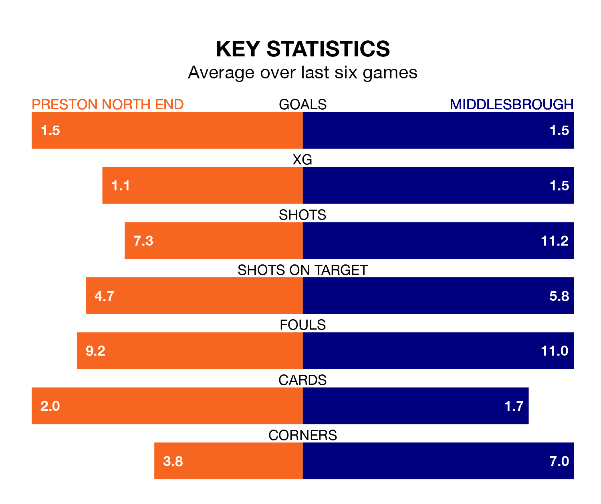

Middlesbrough are strong favourites to take all three points despite Preston North End's home advantage in Wednesday's late match at Deepdale.
*Betting Company* are offering odds of 1.97 on Middlesbrough sealing the win, with the visitors sitting 13th in EFL Championship table.
Preston, despite being 10th in the league and four points ahead of the Boro, are priced at 3.72 to win. A draw is set at 3.52.
In the last 10 years, Preston and Middlesbrough have played each other on 17 occasions. Preston won five of them, Middlesbrough seven, and they drew five times.
On average, the Lilywhites scored 1.2 goals and the Boro 1.6 in those matches.
Their last meeting was on November 28, when Middlesbrough won 4-0 at home.
With 44 goals in 30 games so far this season, Middlesbrough are scoring more than average in the league with 1.5 goals per game. But they are conceding more than average too, letting in 44 goals at a rate of 1.5 per game.
Preston, meanwhile, are below average scorers, with 1.3 goals per game, compared to a league average of 1.4. They have conceded 1.6 goals per game.
In Will Keane, North End have one of the league's sharpest shooters so far this season. He has notched 11 goals in 23 appearances, to sit seventh in the scoring charts.
The Boro's top scorers, with five goals each, are Marcus Forss, Emmanuel Latte Lath and Isaiah Jones.
The Lilywhites are in mixed form in EFL Championship, with three wins and a draw from their last six games.
With two wins and two draws over that period, the away side's form is slightly worse – they have taken eight points from 18, compared to the hosts' 10.
Preston's last match was on Saturday, a 2-0 win against Cardiff City, with Benjamin Whiteman and Emil Ris Jakobsen getting the goals for the Lilywhites.
Middlesbrough lost 2-1 against Bristol City last time out, also on Saturday, with Samuel Silvera on the scoresheet.
Wednesday's match will be refereed by Tony Harrington, who has taken charge of four EFL Championship games so far this season, issuing one red card and booking 18 players. He has not awarded any penalties.
He is yet to oversee a match featuring either Preston or Middlesbrough this season.
Updated: 09:02 (UTC), 13/02/24